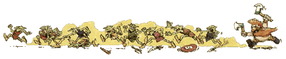
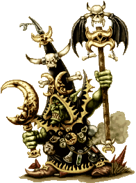

| |
Karak Azgal tárnái

A világvége hegység
egykor virágzó törpe erõsségei, ma már
szinte mind egy szálig ork és goblin kézen
vannak. Nem is beszélve azokról a tárnákról
amelyeket a káosz tart a kezében. Egy-egy ilyen
földalatti alagútrendszerben százával, sõt
ezrével nyüzsögnek az éjgoblinok.
Az alábbiakban egy
olyan tereptárgy leírása következik, mely ezt
hivatott az ork és goblin seregek szolgálatába
állítani. Nem kell hozzá más, csak egy olyan
tereptárgy (lehetõleg hegy) melynek az oldalában
egy bejárat található. Ha ilyened nincs, nézd
meg a modellezési
rovatot, és olvasd el hogyan csinálhatsz
magadnak. Valamint a táblázatban szereplõ figurákra.
De ezt nyugodtan módosíthatod azokra, amelyek a
rendelkezésedre állnak.
Speciális szabályok:
Karak Azgal tárnái.....................300
pont.
Csak Orkok és Goblinok
használhatják.
Az a játékos, akinek a
serege tartalmazza Karak Azgal tárnáit, minden
elõkészítõ fázisban pró- badobásra
jogosult, melyet 2D6-tal hajt végre. Ha a dobás
eredménye két egyforma szám (1-1, 2-2, 3-3,
stb.), akkor a tárna mélyérõl erõsítés érkezik,
Éjgoblinok személyében. Dobj D6-tal az alábbi
táblázaton, hogy megtudd, milyen erõsítés érkezik.
| D6
dobás |
Egység
/ karakter |
| 1 |
A barlangok mélyérõl
4D6 Éjgoblin
harcos tör
elõ. |
| 2 |
4D6 Éjgoblin
íjász özönlik ki a nyíláson. |
| 3 |
A nyílásból 2D6
Éjgoblin squiglovas
ugrik elõ. |
| 4 |
D6*3 vad Squig
tûnik fel és a hozzájuk
tartozó Éjgoblin
squigpásztorok. |
| 5 |
Egy Éjgoblin
Shaman Lord bukkan fel
a nyílásból. |
| 6 |
Egy Éjgoblin
Warboss tûnik fel a
nyílásban, mögötte
pedig 4D6 harcosa. |
|
 |
Ha megvan, hogy kik (mik)
és hányan jönnek segíteni, akkor tedd fel õket
a terepasztalra. Az elsõ körükben csak
csatarendbe állhatnak, a barlangbejárat
3"-es körzetében, de nem mozog- hatnak. A kör
hátralévõ részében, ha van rá mód, lõhetnek
vagy varázsolhatnak.
Remélem jól tudjátok
majd hasznosítani a fenti kis ötletemet, és sok
nyertes csatát szerez majd nektek. Kis fáradtsággal
könnyen átalakítható más fajokra, de csak
olyanokra, melyek elõfor- dulhatnak az Óvilág
alatt húzódó járatokban! Ilyenek lehetnek még
az Orkok, a Skavenek vagy a Káosz, bár így
figyelni kell, hisz jóval több pontba kerülhet!
írta: Rincewind
|
|